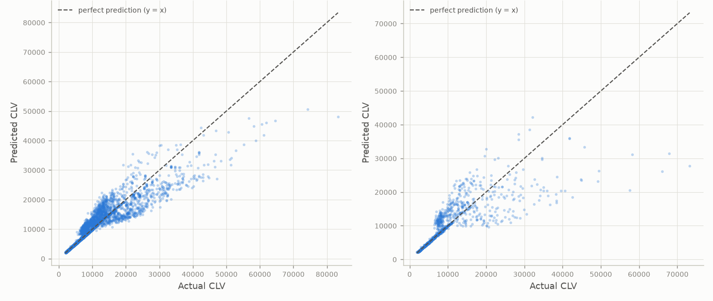
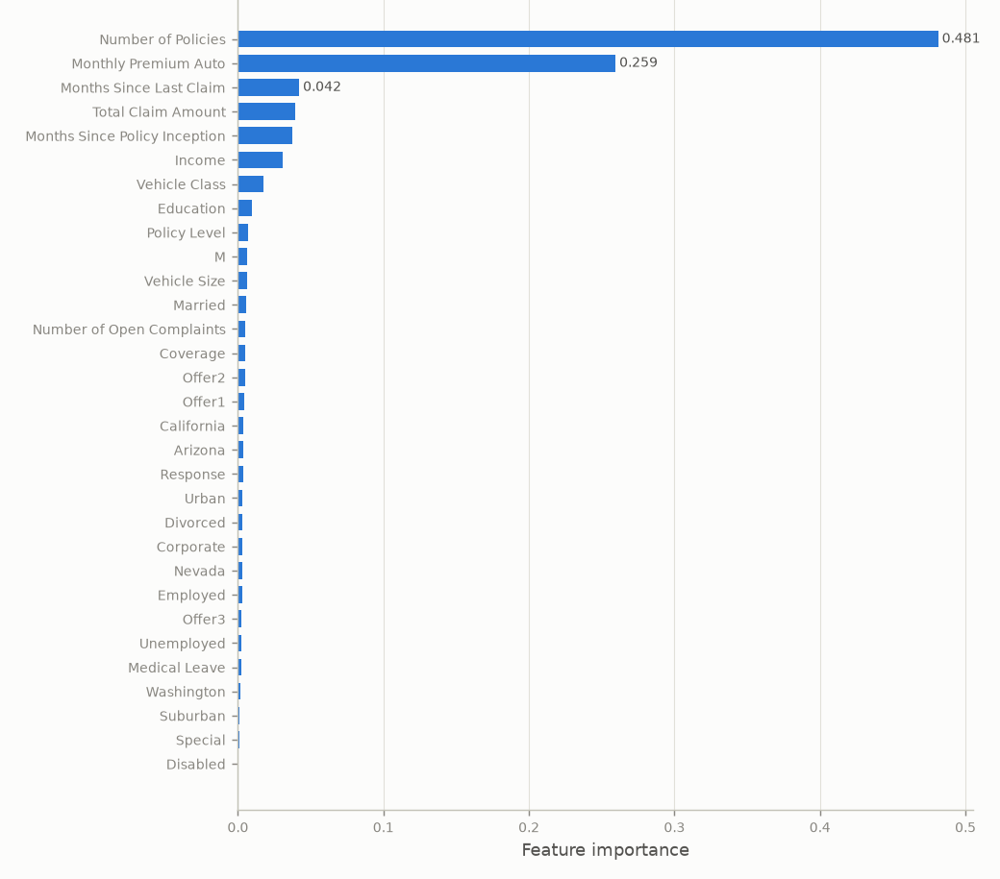

How it works
- Data: a public dataset of 9,134 insurance customers, with policy details, premiums, claims, income and demographics. Categorical fields were encoded into 32 model inputs.
- Models: a Lasso linear baseline, three tree-based models (Random Forest, LightGBM, XGBoost), and a stacked ensemble that combines all three.
- Fair evaluation: an 80/20 split plus 5-fold cross-validation, with every preprocessing step learned from the training rows only, so test data never influences the model.
Results
The tree-based models were far stronger than the linear baseline, because CLV depends on features in non-linear ways. The Random Forest scored R² = 0.71 across five folds. The stacked ensemble scored 0.709, effectively the same, so I chose the Random Forest: just as accurate, simpler, and about a tenth of the training time.
| Model | 5-fold R² | 5-fold RMSE |
|---|---|---|
| Lasso (linear baseline) | 0.161 ± 0.008 | 6,286 |
| Random Forest (chosen) | 0.708 ± 0.015 | 3,707 |
| LightGBM | 0.693 ± 0.013 | 3,805 |
| XGBoost | 0.684 ± 0.009 | 3,861 |
| Stacked ensemble | 0.709 ± 0.014 | 3,701 |


It's tempting to remove "outliers" before splitting the data. Here, the outliers are the highest-value customers, the hardest and most important to predict. Removing them first also strips them from the test set, which inflates the score (R² 0.78 rather than 0.66 on a realistic test set) without the model getting any better. I kept every customer in the test data.
What I'd take into my next project
- Start with a simple baseline. The linear model's R² of 0.16 shows how much the tree models actually add.
- Prefer the simpler model when scores tie. The ensemble added complexity and training time, not accuracy.
- Keep the test set realistic. Removing hard cases from the test data makes a model look better without making it better.
Next steps: a log-transformed target or a business-weighted metric, so the model handles the long tail of high-value customers better.